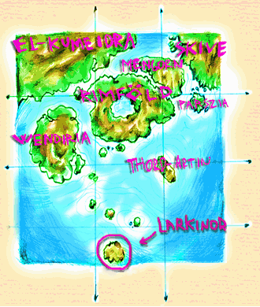
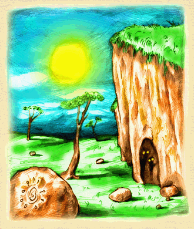
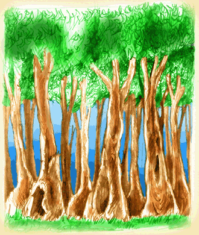
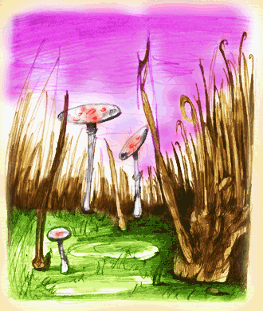
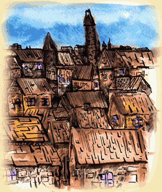
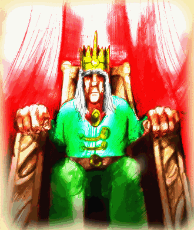

 |
Larkinor az illariai kontinenshez tartozó legdélibb sziget. Így éghajlata is a legzordabb a kontinens többi részéhez képest. A hőmérséklet maximuma nyáron alig éri el a 30 fokot, télen pedig nem ritka a havazás sem. A sziget területe 64 négyzetkilóméter, több mint felét a szintén Larkinor nevet viselő város foglalja el. A várost magas, vastag falak választják el a még vad területektől. A falakon belül az ember a domináns értelmes faj, de jól megférnek itt elfek, törpék, koboldok, goblinok, s egyéb ritka - jobbára értelmes - szerzetek is. |
 |
Az északkeleti részen különös vörösesbarna sziklák között rengeteg barlang található, amelyek messze benyúlnak a föld mélye felé. Érdekes módon a tengervíz nem tud behatolni a mély üregekbe. Egyesek szerint egy a világ hajnalán itt született gonosz, ősi isten mágikus lenyomatát őrzik a sziklák. Ezt a véleményt persze nem mindenki osztja, de az biztos, hogy a folyosók csak úgy ontják a különös, elátkozott lényeket, melyeknek gyakran még a legnagyobb harcosok és mágusok is könnyű prédát jelentenek. Ezen veszélyek ellenére a kalandozó lelkű városlakók mégis gyakran indulnak portyára a városkapukhoz közeli barlangokban mesés kincseket remélve, de kevesen térnek vissza közülük élve. |
 |
A sziget északnyugati részén található az Ezüst erdő, nevét fáinak különös, ezüstös színben játszó kérgéről kapta. Éjszakánként az egész erdő halvány ezüstös fényben dereng. Ez inkább riasztja, mint hívogatja az esetleges látogatókat. Sokan még nappal is félve közlekednek itt - már az emberek közül, mert az erdőben élő apró koboldok ideális helynek tartják azt. Bár a koboldok beszélik az emberi nyelvet, kerülik a találkozást az emberekkel, ritkán tévednek be a városba, s ha ezt mégis megteszik, annak nyomós oka van... |
 |
A délnyugati részen terül el a mocsár, melynek nevét a helybeliek babonából nem ejtik ki soha. Ez sem túl kellemes hely, a pihenni vágyók számára - tele van mérgező növényekkel, óriási rovarokkal, kígyókkal, meg persze mindenféle gonosz szerzetekkel. A terület annyira alacsonyan fekszik, hogy dagály idején a vándor gyakran térdig jár az édes-sós keveredett vízben. A terület különlegessége, hogy itt is találhatók barlangok - a víz valamilyen csoda folytán ide sem tud befolyni... |
 |
A szigeten lévő város, Larkinor tekintélyes kort ért meg a maga 2000 évével. Ez többek között annak köszönhető, hogy az ezer évvel korábbi, a kontinens civilizációit pusztító háború idején megszakadtak kapcsolatai a külvilággal, így nem fenyegette külső veszély az uralkodó Lark házat, s békésen kormányozhatták birodalmukat. A kontinens ébredő civilizációja ötven évvel ezelőtt talált rá a virágzó királyságra. Sajnos az érkező hajók egy ismeretlen járványos kórt is magukkal hoztak, minek következtében a sziget lakosainak több mint fele elpusztult. Szerencsére az istenek a gyakori, őszinte imákat meghalgatták és megszünt a vész. |
 |
A király, hogy visszanyerje birodalma erejét - amely az elégedett alattvalók sokaságában rejlik - futáraival Illaria szerte kihirdette a következőt:"Én VI. Lorden, Larkinor királya szívesen látok minden bevándorlót, legyen az jó vagy gonosz, aki hűséget fogad a Lark háznak! Mindenki kap szállást és pénzt, amíg nem tud maga gondoskodni a megélhetéséről. Egyetlen feltétel van: királyságomban mindenki szabadon élhet, de addig senki nem hagyhatja el a szigetet, amíg meg nem váltotta magát! A váltságdíj 1.000.000 ezüstpénz..."- Itt kezdődik a te történeted is! Az egyik jobblétre vágyó bevándorlókat szállító hajóval érkezel. Miután hűséget esküdsz a királynak, az elit őrök kuckódba kísérnek, majd eredményes életet kívánva elköszönnek... |